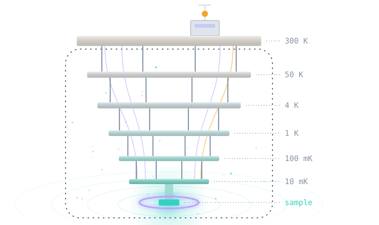
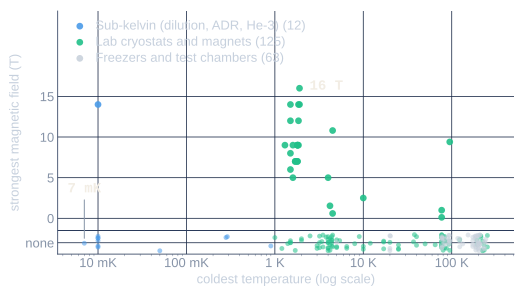

VibeCheck · The usable formal methods
hackathon · San Francisco · Nov 2026
Can this cryostat do my experiment?

Hanah Rahman · Nicholas Brandenburg
hrahman12.github.io/CryoLean · github.com/hrahman12/CryoLean · generic cryostat drawn in code, no real model
/ The problem · why cryostats

The catalog: 220 machine configurations, 204 experiment profiles.
24 h
to cool a Bluefors LD. A late mismatch costs that day again.
23.5 %
of capability entries unconfirmed (665 of 2,832).
149 of 286
pairs a datasheet-style checker says yes to that Lean won’t sign off on.
Chart: data/cryostats/, 200 of 220 configurations with a documented coldest temperature, field = installed magnet · data/evidence/bluefors.json · data/coverage.json · paper/data/fig_baseline_comparison.json (paper evaluation): of the 149, 148 lack trusted evidence, 1 genuinely overheats.
/ What it does
The ask
Can a Bluefors LD400 run our 50-qubit wiring?
10 mK ≤ 20 mK ✓
168 ≥ 124 lines ✓
median 138 ms per check,
including process start
Lean’s answer
DOES NOT MEET
Each spec passes, but together the lines put 14.592 µW into a mixing chamber that removes 12 µW.
REQUIREMENTS MET
Z3 suggests 39 flux lines. Lean re-checks: 11.985 µW ≤ 12 µW.
docs/examples/demo_b_coupled.json · paper/data/e5_heat.json · e2_latency.json · wiring from Krinner et al., EPJ Quantum Technology 2019.
/ Proof it works
theorem verdict_accept_iff (cfg : Configuration) (e : Experiment) : verdict cfg e = .accept ↔ AcceptSpec cfg e
In words: Lean says requirements met exactly when a separately written specification holds.
128
theorems, 0 sorry. 48 axiom-audited, standard axioms only.
2,750
fault-injected configurations. 0 defective ones accepted.
15,795
of 15,795 heat-budget designs: Z3 and Lean agree.
lean/CryoLean/Soundness.lean:861 · lean/audit-axioms.json · paper/data/e4_faults.json · fig_z3_lean_agreement.json. Proofs cover the modelled requirements and sourced facts, not the physical machine.